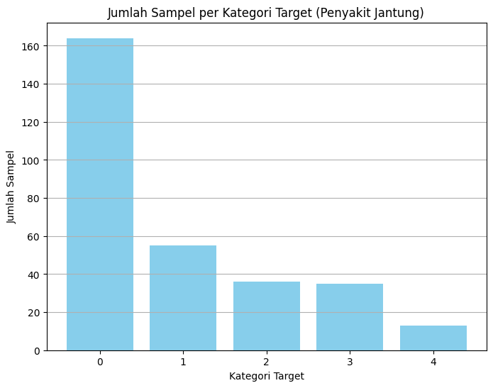

INTEGRASI DATA#
Sumber Dataset#
https://archive.ics.uci.edu/dataset/45/heart+disease
!pip3 install -U ucimlrepo
Collecting ucimlrepo
Downloading ucimlrepo-0.0.7-py3-none-any.whl.metadata (5.5 kB)
Requirement already satisfied: pandas>=1.0.0 in /home/codespace/.local/lib/python3.12/site-packages (from ucimlrepo) (2.2.3)
Requirement already satisfied: certifi>=2020.12.5 in /home/codespace/.local/lib/python3.12/site-packages (from ucimlrepo) (2024.8.30)
Requirement already satisfied: numpy>=1.26.0 in /home/codespace/.local/lib/python3.12/site-packages (from pandas>=1.0.0->ucimlrepo) (2.2.0)
Requirement already satisfied: python-dateutil>=2.8.2 in /home/codespace/.local/lib/python3.12/site-packages (from pandas>=1.0.0->ucimlrepo) (2.9.0.post0)
Requirement already satisfied: pytz>=2020.1 in /home/codespace/.local/lib/python3.12/site-packages (from pandas>=1.0.0->ucimlrepo) (2024.2)
Requirement already satisfied: tzdata>=2022.7 in /home/codespace/.local/lib/python3.12/site-packages (from pandas>=1.0.0->ucimlrepo) (2024.2)
Requirement already satisfied: six>=1.5 in /home/codespace/.local/lib/python3.12/site-packages (from python-dateutil>=2.8.2->pandas>=1.0.0->ucimlrepo) (1.17.0)
Downloading ucimlrepo-0.0.7-py3-none-any.whl (8.0 kB)
Installing collected packages: ucimlrepo
Successfully installed ucimlrepo-0.0.7
[notice] A new release of pip is available: 24.3.1 -> 25.1.1
[notice] To update, run: python3 -m pip install --upgrade pip
from ucimlrepo import fetch_ucirepo
# fetch dataset
heart_disease = fetch_ucirepo(id=45)
# data (as pandas dataframes)
X = heart_disease.data.features
y = heart_disease.data.targets
# metadata
print(heart_disease.metadata)
# variable information
print(heart_disease.variables)
{'uci_id': 45, 'name': 'Heart Disease', 'repository_url': 'https://archive.ics.uci.edu/dataset/45/heart+disease', 'data_url': 'https://archive.ics.uci.edu/static/public/45/data.csv', 'abstract': '4 databases: Cleveland, Hungary, Switzerland, and the VA Long Beach', 'area': 'Health and Medicine', 'tasks': ['Classification'], 'characteristics': ['Multivariate'], 'num_instances': 303, 'num_features': 13, 'feature_types': ['Categorical', 'Integer', 'Real'], 'demographics': ['Age', 'Sex'], 'target_col': ['num'], 'index_col': None, 'has_missing_values': 'yes', 'missing_values_symbol': 'NaN', 'year_of_dataset_creation': 1989, 'last_updated': 'Fri Nov 03 2023', 'dataset_doi': '10.24432/C52P4X', 'creators': ['Andras Janosi', 'William Steinbrunn', 'Matthias Pfisterer', 'Robert Detrano'], 'intro_paper': {'ID': 231, 'type': 'NATIVE', 'title': 'International application of a new probability algorithm for the diagnosis of coronary artery disease.', 'authors': 'R. Detrano, A. Jánosi, W. Steinbrunn, M. Pfisterer, J. Schmid, S. Sandhu, K. Guppy, S. Lee, V. Froelicher', 'venue': 'American Journal of Cardiology', 'year': 1989, 'journal': None, 'DOI': None, 'URL': 'https://www.semanticscholar.org/paper/a7d714f8f87bfc41351eb5ae1e5472f0ebbe0574', 'sha': None, 'corpus': None, 'arxiv': None, 'mag': None, 'acl': None, 'pmid': '2756873', 'pmcid': None}, 'additional_info': {'summary': 'This database contains 76 attributes, but all published experiments refer to using a subset of 14 of them. In particular, the Cleveland database is the only one that has been used by ML researchers to date. The "goal" field refers to the presence of heart disease in the patient. It is integer valued from 0 (no presence) to 4. Experiments with the Cleveland database have concentrated on simply attempting to distinguish presence (values 1,2,3,4) from absence (value 0). \n \nThe names and social security numbers of the patients were recently removed from the database, replaced with dummy values.\n\nOne file has been "processed", that one containing the Cleveland database. All four unprocessed files also exist in this directory.\n\nTo see Test Costs (donated by Peter Turney), please see the folder "Costs" ', 'purpose': None, 'funded_by': None, 'instances_represent': None, 'recommended_data_splits': None, 'sensitive_data': None, 'preprocessing_description': None, 'variable_info': 'Only 14 attributes used:\r\n 1. #3 (age) \r\n 2. #4 (sex) \r\n 3. #9 (cp) \r\n 4. #10 (trestbps) \r\n 5. #12 (chol) \r\n 6. #16 (fbs) \r\n 7. #19 (restecg) \r\n 8. #32 (thalach) \r\n 9. #38 (exang) \r\n 10. #40 (oldpeak) \r\n 11. #41 (slope) \r\n 12. #44 (ca) \r\n 13. #51 (thal) \r\n 14. #58 (num) (the predicted attribute)\r\n\r\nComplete attribute documentation:\r\n 1 id: patient identification number\r\n 2 ccf: social security number (I replaced this with a dummy value of 0)\r\n 3 age: age in years\r\n 4 sex: sex (1 = male; 0 = female)\r\n 5 painloc: chest pain location (1 = substernal; 0 = otherwise)\r\n 6 painexer (1 = provoked by exertion; 0 = otherwise)\r\n 7 relrest (1 = relieved after rest; 0 = otherwise)\r\n 8 pncaden (sum of 5, 6, and 7)\r\n 9 cp: chest pain type\r\n -- Value 1: typical angina\r\n -- Value 2: atypical angina\r\n -- Value 3: non-anginal pain\r\n -- Value 4: asymptomatic\r\n 10 trestbps: resting blood pressure (in mm Hg on admission to the hospital)\r\n 11 htn\r\n 12 chol: serum cholestoral in mg/dl\r\n 13 smoke: I believe this is 1 = yes; 0 = no (is or is not a smoker)\r\n 14 cigs (cigarettes per day)\r\n 15 years (number of years as a smoker)\r\n 16 fbs: (fasting blood sugar > 120 mg/dl) (1 = true; 0 = false)\r\n 17 dm (1 = history of diabetes; 0 = no such history)\r\n 18 famhist: family history of coronary artery disease (1 = yes; 0 = no)\r\n 19 restecg: resting electrocardiographic results\r\n -- Value 0: normal\r\n -- Value 1: having ST-T wave abnormality (T wave inversions and/or ST elevation or depression of > 0.05 mV)\r\n -- Value 2: showing probable or definite left ventricular hypertrophy by Estes\' criteria\r\n 20 ekgmo (month of exercise ECG reading)\r\n 21 ekgday(day of exercise ECG reading)\r\n 22 ekgyr (year of exercise ECG reading)\r\n 23 dig (digitalis used furing exercise ECG: 1 = yes; 0 = no)\r\n 24 prop (Beta blocker used during exercise ECG: 1 = yes; 0 = no)\r\n 25 nitr (nitrates used during exercise ECG: 1 = yes; 0 = no)\r\n 26 pro (calcium channel blocker used during exercise ECG: 1 = yes; 0 = no)\r\n 27 diuretic (diuretic used used during exercise ECG: 1 = yes; 0 = no)\r\n 28 proto: exercise protocol\r\n 1 = Bruce \r\n 2 = Kottus\r\n 3 = McHenry\r\n 4 = fast Balke\r\n 5 = Balke\r\n 6 = Noughton \r\n 7 = bike 150 kpa min/min (Not sure if "kpa min/min" is what was written!)\r\n 8 = bike 125 kpa min/min \r\n 9 = bike 100 kpa min/min\r\n 10 = bike 75 kpa min/min\r\n 11 = bike 50 kpa min/min\r\n 12 = arm ergometer\r\n 29 thaldur: duration of exercise test in minutes\r\n 30 thaltime: time when ST measure depression was noted\r\n 31 met: mets achieved\r\n 32 thalach: maximum heart rate achieved\r\n 33 thalrest: resting heart rate\r\n 34 tpeakbps: peak exercise blood pressure (first of 2 parts)\r\n 35 tpeakbpd: peak exercise blood pressure (second of 2 parts)\r\n 36 dummy\r\n 37 trestbpd: resting blood pressure\r\n 38 exang: exercise induced angina (1 = yes; 0 = no)\r\n 39 xhypo: (1 = yes; 0 = no)\r\n 40 oldpeak = ST depression induced by exercise relative to rest\r\n 41 slope: the slope of the peak exercise ST segment\r\n -- Value 1: upsloping\r\n -- Value 2: flat\r\n -- Value 3: downsloping\r\n 42 rldv5: height at rest\r\n 43 rldv5e: height at peak exercise\r\n 44 ca: number of major vessels (0-3) colored by flourosopy\r\n 45 restckm: irrelevant\r\n 46 exerckm: irrelevant\r\n 47 restef: rest raidonuclid (sp?) ejection fraction\r\n 48 restwm: rest wall (sp?) motion abnormality\r\n 0 = none\r\n 1 = mild or moderate\r\n 2 = moderate or severe\r\n 3 = akinesis or dyskmem (sp?)\r\n 49 exeref: exercise radinalid (sp?) ejection fraction\r\n 50 exerwm: exercise wall (sp?) motion \r\n 51 thal: 3 = normal; 6 = fixed defect; 7 = reversable defect\r\n 52 thalsev: not used\r\n 53 thalpul: not used\r\n 54 earlobe: not used\r\n 55 cmo: month of cardiac cath (sp?) (perhaps "call")\r\n 56 cday: day of cardiac cath (sp?)\r\n 57 cyr: year of cardiac cath (sp?)\r\n 58 num: diagnosis of heart disease (angiographic disease status)\r\n -- Value 0: < 50% diameter narrowing\r\n -- Value 1: > 50% diameter narrowing\r\n (in any major vessel: attributes 59 through 68 are vessels)\r\n 59 lmt\r\n 60 ladprox\r\n 61 laddist\r\n 62 diag\r\n 63 cxmain\r\n 64 ramus\r\n 65 om1\r\n 66 om2\r\n 67 rcaprox\r\n 68 rcadist\r\n 69 lvx1: not used\r\n 70 lvx2: not used\r\n 71 lvx3: not used\r\n 72 lvx4: not used\r\n 73 lvf: not used\r\n 74 cathef: not used\r\n 75 junk: not used\r\n 76 name: last name of patient (I replaced this with the dummy string "name")', 'citation': None}}
name role type demographic \
0 age Feature Integer Age
1 sex Feature Categorical Sex
2 cp Feature Categorical None
3 trestbps Feature Integer None
4 chol Feature Integer None
5 fbs Feature Categorical None
6 restecg Feature Categorical None
7 thalach Feature Integer None
8 exang Feature Categorical None
9 oldpeak Feature Integer None
10 slope Feature Categorical None
11 ca Feature Integer None
12 thal Feature Categorical None
13 num Target Integer None
description units missing_values
0 None years no
1 None None no
2 None None no
3 resting blood pressure (on admission to the ho... mm Hg no
4 serum cholestoral mg/dl no
5 fasting blood sugar > 120 mg/dl None no
6 None None no
7 maximum heart rate achieved None no
8 exercise induced angina None no
9 ST depression induced by exercise relative to ... None no
10 None None no
11 number of major vessels (0-3) colored by flour... None yes
12 None None yes
13 diagnosis of heart disease None no
import pandas as pd
# Membaca dataset dari file CSV lokal
data = pd.read_csv("heart_disease_cleveland.csv")
# Menyimpan ulang (opsional, jika ingin memastikan disimpan ke file lain)
data.to_csv("heart_disease_cleaned.csv", index=False)
# Menampilkan informasi fitur
print(data.info())
# Menampilkan 5 baris pertama
print(data.head())
---------------------------------------------------------------------------
FileNotFoundError Traceback (most recent call last)
Cell In[3], line 4
1 import pandas as pd
3 # Membaca dataset dari file CSV lokal
----> 4 data = pd.read_csv("heart_disease_cleveland.csv")
6 # Menyimpan ulang (opsional, jika ingin memastikan disimpan ke file lain)
7 data.to_csv("heart_disease_cleaned.csv", index=False)
File ~/.local/lib/python3.12/site-packages/pandas/io/parsers/readers.py:1026, in read_csv(filepath_or_buffer, sep, delimiter, header, names, index_col, usecols, dtype, engine, converters, true_values, false_values, skipinitialspace, skiprows, skipfooter, nrows, na_values, keep_default_na, na_filter, verbose, skip_blank_lines, parse_dates, infer_datetime_format, keep_date_col, date_parser, date_format, dayfirst, cache_dates, iterator, chunksize, compression, thousands, decimal, lineterminator, quotechar, quoting, doublequote, escapechar, comment, encoding, encoding_errors, dialect, on_bad_lines, delim_whitespace, low_memory, memory_map, float_precision, storage_options, dtype_backend)
1013 kwds_defaults = _refine_defaults_read(
1014 dialect,
1015 delimiter,
(...)
1022 dtype_backend=dtype_backend,
1023 )
1024 kwds.update(kwds_defaults)
-> 1026 return _read(filepath_or_buffer, kwds)
File ~/.local/lib/python3.12/site-packages/pandas/io/parsers/readers.py:620, in _read(filepath_or_buffer, kwds)
617 _validate_names(kwds.get("names", None))
619 # Create the parser.
--> 620 parser = TextFileReader(filepath_or_buffer, **kwds)
622 if chunksize or iterator:
623 return parser
File ~/.local/lib/python3.12/site-packages/pandas/io/parsers/readers.py:1620, in TextFileReader.__init__(self, f, engine, **kwds)
1617 self.options["has_index_names"] = kwds["has_index_names"]
1619 self.handles: IOHandles | None = None
-> 1620 self._engine = self._make_engine(f, self.engine)
File ~/.local/lib/python3.12/site-packages/pandas/io/parsers/readers.py:1880, in TextFileReader._make_engine(self, f, engine)
1878 if "b" not in mode:
1879 mode += "b"
-> 1880 self.handles = get_handle(
1881 f,
1882 mode,
1883 encoding=self.options.get("encoding", None),
1884 compression=self.options.get("compression", None),
1885 memory_map=self.options.get("memory_map", False),
1886 is_text=is_text,
1887 errors=self.options.get("encoding_errors", "strict"),
1888 storage_options=self.options.get("storage_options", None),
1889 )
1890 assert self.handles is not None
1891 f = self.handles.handle
File ~/.local/lib/python3.12/site-packages/pandas/io/common.py:873, in get_handle(path_or_buf, mode, encoding, compression, memory_map, is_text, errors, storage_options)
868 elif isinstance(handle, str):
869 # Check whether the filename is to be opened in binary mode.
870 # Binary mode does not support 'encoding' and 'newline'.
871 if ioargs.encoding and "b" not in ioargs.mode:
872 # Encoding
--> 873 handle = open(
874 handle,
875 ioargs.mode,
876 encoding=ioargs.encoding,
877 errors=errors,
878 newline="",
879 )
880 else:
881 # Binary mode
882 handle = open(handle, ioargs.mode)
FileNotFoundError: [Errno 2] No such file or directory: 'heart_disease_cleveland.csv'
import pandas as pd
import seaborn as sns
import matplotlib.pyplot as plt
# Membaca dataset
data = pd.read_csv("heart_disease_cleveland.csv")
# Visualisasi jumlah sampel per label (0 = tidak ada penyakit, 1-4 = tingkat penyakit jantung)
plt.figure(figsize=(8, 6))
sns.countplot(x='target', data=data, palette='viridis')
plt.title('Jumlah Sampel per Kategori Target (Penyakit Jantung)')
plt.xlabel('Kategori Target')
plt.ylabel('Jumlah Sampel')
plt.show()
/tmp/ipython-input-15-2616561951.py:10: FutureWarning:
Passing `palette` without assigning `hue` is deprecated and will be removed in v0.14.0. Assign the `x` variable to `hue` and set `legend=False` for the same effect.
sns.countplot(x='target', data=data, palette='viridis')
EKSPLORASI DATA#
display(data) #display dataset
| age | sex | cp | trestbps | chol | fbs | restecg | thalach | exang | oldpeak | slope | ca | thal | target | |
|---|---|---|---|---|---|---|---|---|---|---|---|---|---|---|
| 0 | 63.0 | 1.0 | 1.0 | 145.0 | 233.0 | 1.0 | 2.0 | 150.0 | 0.0 | 2.3 | 3.0 | 0.0 | 6.0 | 0 |
| 1 | 67.0 | 1.0 | 4.0 | 160.0 | 286.0 | 0.0 | 2.0 | 108.0 | 1.0 | 1.5 | 2.0 | 3.0 | 3.0 | 2 |
| 2 | 67.0 | 1.0 | 4.0 | 120.0 | 229.0 | 0.0 | 2.0 | 129.0 | 1.0 | 2.6 | 2.0 | 2.0 | 7.0 | 1 |
| 3 | 37.0 | 1.0 | 3.0 | 130.0 | 250.0 | 0.0 | 0.0 | 187.0 | 0.0 | 3.5 | 3.0 | 0.0 | 3.0 | 0 |
| 4 | 41.0 | 0.0 | 2.0 | 130.0 | 204.0 | 0.0 | 2.0 | 172.0 | 0.0 | 1.4 | 1.0 | 0.0 | 3.0 | 0 |
| ... | ... | ... | ... | ... | ... | ... | ... | ... | ... | ... | ... | ... | ... | ... |
| 298 | 45.0 | 1.0 | 1.0 | 110.0 | 264.0 | 0.0 | 0.0 | 132.0 | 0.0 | 1.2 | 2.0 | 0.0 | 7.0 | 1 |
| 299 | 68.0 | 1.0 | 4.0 | 144.0 | 193.0 | 1.0 | 0.0 | 141.0 | 0.0 | 3.4 | 2.0 | 2.0 | 7.0 | 2 |
| 300 | 57.0 | 1.0 | 4.0 | 130.0 | 131.0 | 0.0 | 0.0 | 115.0 | 1.0 | 1.2 | 2.0 | 1.0 | 7.0 | 3 |
| 301 | 57.0 | 0.0 | 2.0 | 130.0 | 236.0 | 0.0 | 2.0 | 174.0 | 0.0 | 0.0 | 2.0 | 1.0 | 3.0 | 1 |
| 302 | 38.0 | 1.0 | 3.0 | 138.0 | 175.0 | 0.0 | 0.0 | 173.0 | 0.0 | 0.0 | 1.0 | NaN | 3.0 | 0 |
303 rows × 14 columns
import pandas as pd
import matplotlib.pyplot as plt
# Baca CSV
data = pd.read_csv("heart_disease_cleveland.csv")
# Hitung jumlah tiap label pada kolom 'target'
label_counts = data['target'].value_counts().sort_index()
# Visualisasi jumlah sampel
plt.figure(figsize=(8, 6))
plt.bar(label_counts.index.astype(str), label_counts.values, color='skyblue')
plt.title('Jumlah Sampel per Kategori Target (Penyakit Jantung)')
plt.xlabel('Kategori Target')
plt.ylabel('Jumlah Sampel')
plt.grid(axis='y')
plt.show()

import pandas as pd
import matplotlib.pyplot as plt
# Membaca dataset
data = pd.read_csv("heart_disease_cleveland.csv")
# Visualisasi distribusi semua fitur numerik
plt.figure(figsize=(15, 10))
data.hist(bins=30, figsize=(15, 10), color='red', edgecolor='black')
plt.suptitle('Distribusi Fitur pada Dataset Heart Disease Cleveland', fontsize=16)
plt.tight_layout()
plt.subplots_adjust(top=0.93)
plt.show()
<Figure size 1500x1000 with 0 Axes>
STRUKTUR DATASET#
data.shape #untuk mengetahui bentuk dataset(baris & kolom)
(303, 14)
data.columns #untuk mengetahui kolom-kolom yang ada pada dataset
Index(['age', 'sex', 'cp', 'trestbps', 'chol', 'fbs', 'restecg', 'thalach',
'exang', 'oldpeak', 'slope', 'ca', 'thal', 'target'],
dtype='object')
data.dtypes #untuk mengetahui tipe data dari masing-masing kolom
| 0 | |
|---|---|
| age | float64 |
| sex | float64 |
| cp | float64 |
| trestbps | float64 |
| chol | float64 |
| fbs | float64 |
| restecg | float64 |
| thalach | float64 |
| exang | float64 |
| oldpeak | float64 |
| slope | float64 |
| ca | float64 |
| thal | float64 |
| target | int64 |
data.groupby('target').size() #untuk mengetahui jumlah masing-masing class
| 0 | |
|---|---|
| target | |
| 0 | 164 |
| 1 | 55 |
| 2 | 36 |
| 3 | 35 |
| 4 | 13 |
IDENTIFIKASI KUALITAS DATASET#
import pandas as pd
# Membaca dataset dari file CSV
data = pd.read_csv("heart_disease_cleveland.csv")
# Deteksi baris yang memiliki nilai hilang
rows_with_missing = data[data.isnull().any(axis=1)]
# Tampilkan baris-baris tersebut
print("Rows with Missing Values:")
print(rows_with_missing)
# Deteksi missing value per kolom
missing_values = data.isnull()
# Hitung jumlah missing value di setiap kolom
missing_counts = missing_values.sum()
# Tampilkan hasil
print("\nMissing Value Counts per Column:")
print(missing_counts)
Rows with Missing Values:
age sex cp trestbps chol fbs restecg thalach exang oldpeak \
87 53.0 0.0 3.0 128.0 216.0 0.0 2.0 115.0 0.0 0.0
166 52.0 1.0 3.0 138.0 223.0 0.0 0.0 169.0 0.0 0.0
192 43.0 1.0 4.0 132.0 247.0 1.0 2.0 143.0 1.0 0.1
266 52.0 1.0 4.0 128.0 204.0 1.0 0.0 156.0 1.0 1.0
287 58.0 1.0 2.0 125.0 220.0 0.0 0.0 144.0 0.0 0.4
302 38.0 1.0 3.0 138.0 175.0 0.0 0.0 173.0 0.0 0.0
slope ca thal target
87 1.0 0.0 NaN 0
166 1.0 NaN 3.0 0
192 2.0 NaN 7.0 1
266 2.0 0.0 NaN 2
287 2.0 NaN 7.0 0
302 1.0 NaN 3.0 0
Missing Value Counts per Column:
age 0
sex 0
cp 0
trestbps 0
chol 0
fbs 0
restecg 0
thalach 0
exang 0
oldpeak 0
slope 0
ca 4
thal 2
target 0
dtype: int64
PREPROCESING DATA#
import pandas as pd
# Membaca dataset
data = pd.read_csv("heart_disease_cleveland.csv")
# Buat salinan data untuk diamati
data_before = data.copy()
# Mengganti label pada kolom 'target': 0 = Tidak Sakit, 1-4 = Sakit
data_before['target'] = data_before['target'].replace({
0: 'Tidak Sakit',
1: 'Sakit',
2: 'Sakit',
3: 'Sakit',
4: 'Sakit'
})
# Tampilkan 20 baris pertama
print(data_before.head(20))
age sex cp trestbps chol fbs restecg thalach exang oldpeak \
0 63.0 1.0 1.0 145.0 233.0 1.0 2.0 150.0 0.0 2.3
1 67.0 1.0 4.0 160.0 286.0 0.0 2.0 108.0 1.0 1.5
2 67.0 1.0 4.0 120.0 229.0 0.0 2.0 129.0 1.0 2.6
3 37.0 1.0 3.0 130.0 250.0 0.0 0.0 187.0 0.0 3.5
4 41.0 0.0 2.0 130.0 204.0 0.0 2.0 172.0 0.0 1.4
5 56.0 1.0 2.0 120.0 236.0 0.0 0.0 178.0 0.0 0.8
6 62.0 0.0 4.0 140.0 268.0 0.0 2.0 160.0 0.0 3.6
7 57.0 0.0 4.0 120.0 354.0 0.0 0.0 163.0 1.0 0.6
8 63.0 1.0 4.0 130.0 254.0 0.0 2.0 147.0 0.0 1.4
9 53.0 1.0 4.0 140.0 203.0 1.0 2.0 155.0 1.0 3.1
10 57.0 1.0 4.0 140.0 192.0 0.0 0.0 148.0 0.0 0.4
11 56.0 0.0 2.0 140.0 294.0 0.0 2.0 153.0 0.0 1.3
12 56.0 1.0 3.0 130.0 256.0 1.0 2.0 142.0 1.0 0.6
13 44.0 1.0 2.0 120.0 263.0 0.0 0.0 173.0 0.0 0.0
14 52.0 1.0 3.0 172.0 199.0 1.0 0.0 162.0 0.0 0.5
15 57.0 1.0 3.0 150.0 168.0 0.0 0.0 174.0 0.0 1.6
16 48.0 1.0 2.0 110.0 229.0 0.0 0.0 168.0 0.0 1.0
17 54.0 1.0 4.0 140.0 239.0 0.0 0.0 160.0 0.0 1.2
18 48.0 0.0 3.0 130.0 275.0 0.0 0.0 139.0 0.0 0.2
19 49.0 1.0 2.0 130.0 266.0 0.0 0.0 171.0 0.0 0.6
slope ca thal target
0 3.0 0.0 6.0 Tidak Sakit
1 2.0 3.0 3.0 Sakit
2 2.0 2.0 7.0 Sakit
3 3.0 0.0 3.0 Tidak Sakit
4 1.0 0.0 3.0 Tidak Sakit
5 1.0 0.0 3.0 Tidak Sakit
6 3.0 2.0 3.0 Sakit
7 1.0 0.0 3.0 Tidak Sakit
8 2.0 1.0 7.0 Sakit
9 3.0 0.0 7.0 Sakit
10 2.0 0.0 6.0 Tidak Sakit
11 2.0 0.0 3.0 Tidak Sakit
12 2.0 1.0 6.0 Sakit
13 1.0 0.0 7.0 Tidak Sakit
14 1.0 0.0 7.0 Tidak Sakit
15 1.0 0.0 3.0 Tidak Sakit
16 3.0 0.0 7.0 Sakit
17 1.0 0.0 3.0 Tidak Sakit
18 1.0 0.0 3.0 Tidak Sakit
19 1.0 0.0 3.0 Tidak Sakit
import pandas as pd
# Membaca data yang sebelumnya sudah dikategorikan (target: 'Tidak Sakit', 'Sakit')
data_before = pd.read_csv("heart_disease_cleveland.csv")
# Ubah label numerik menjadi kategori terlebih dahulu (jika belum)
data_before['target'] = data_before['target'].replace({
1: 'Sakit', 2: 'Sakit', 3: 'Sakit', 4: 'Sakit', 0: 'Tidak Sakit'
})
# Sekarang ubah kembali dari kategori ke angka (Jinak=0, Ganas=1 → Tidak Sakit=0, Sakit=1)
data_before['target'] = data_before['target'].replace({'Tidak Sakit': 0, 'Sakit': 1})
# Tampilkan 20 baris pertama
print(data_before.head(20))
age sex cp trestbps chol fbs restecg thalach exang oldpeak \
0 63.0 1.0 1.0 145.0 233.0 1.0 2.0 150.0 0.0 2.3
1 67.0 1.0 4.0 160.0 286.0 0.0 2.0 108.0 1.0 1.5
2 67.0 1.0 4.0 120.0 229.0 0.0 2.0 129.0 1.0 2.6
3 37.0 1.0 3.0 130.0 250.0 0.0 0.0 187.0 0.0 3.5
4 41.0 0.0 2.0 130.0 204.0 0.0 2.0 172.0 0.0 1.4
5 56.0 1.0 2.0 120.0 236.0 0.0 0.0 178.0 0.0 0.8
6 62.0 0.0 4.0 140.0 268.0 0.0 2.0 160.0 0.0 3.6
7 57.0 0.0 4.0 120.0 354.0 0.0 0.0 163.0 1.0 0.6
8 63.0 1.0 4.0 130.0 254.0 0.0 2.0 147.0 0.0 1.4
9 53.0 1.0 4.0 140.0 203.0 1.0 2.0 155.0 1.0 3.1
10 57.0 1.0 4.0 140.0 192.0 0.0 0.0 148.0 0.0 0.4
11 56.0 0.0 2.0 140.0 294.0 0.0 2.0 153.0 0.0 1.3
12 56.0 1.0 3.0 130.0 256.0 1.0 2.0 142.0 1.0 0.6
13 44.0 1.0 2.0 120.0 263.0 0.0 0.0 173.0 0.0 0.0
14 52.0 1.0 3.0 172.0 199.0 1.0 0.0 162.0 0.0 0.5
15 57.0 1.0 3.0 150.0 168.0 0.0 0.0 174.0 0.0 1.6
16 48.0 1.0 2.0 110.0 229.0 0.0 0.0 168.0 0.0 1.0
17 54.0 1.0 4.0 140.0 239.0 0.0 0.0 160.0 0.0 1.2
18 48.0 0.0 3.0 130.0 275.0 0.0 0.0 139.0 0.0 0.2
19 49.0 1.0 2.0 130.0 266.0 0.0 0.0 171.0 0.0 0.6
slope ca thal target
0 3.0 0.0 6.0 0
1 2.0 3.0 3.0 1
2 2.0 2.0 7.0 1
3 3.0 0.0 3.0 0
4 1.0 0.0 3.0 0
5 1.0 0.0 3.0 0
6 3.0 2.0 3.0 1
7 1.0 0.0 3.0 0
8 2.0 1.0 7.0 1
9 3.0 0.0 7.0 1
10 2.0 0.0 6.0 0
11 2.0 0.0 3.0 0
12 2.0 1.0 6.0 1
13 1.0 0.0 7.0 0
14 1.0 0.0 7.0 0
15 1.0 0.0 3.0 0
16 3.0 0.0 7.0 1
17 1.0 0.0 3.0 0
18 1.0 0.0 3.0 0
19 1.0 0.0 3.0 0
/tmp/ipython-input-29-1648995197.py:12: FutureWarning: Downcasting behavior in `replace` is deprecated and will be removed in a future version. To retain the old behavior, explicitly call `result.infer_objects(copy=False)`. To opt-in to the future behavior, set `pd.set_option('future.no_silent_downcasting', True)`
data_before['target'] = data_before['target'].replace({'Tidak Sakit': 0, 'Sakit': 1})